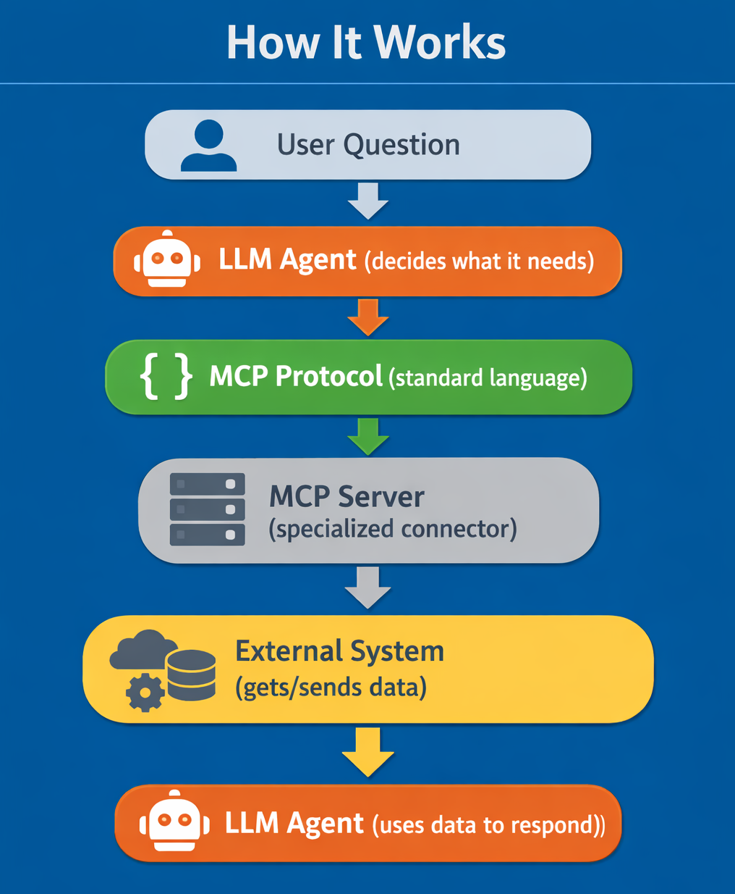
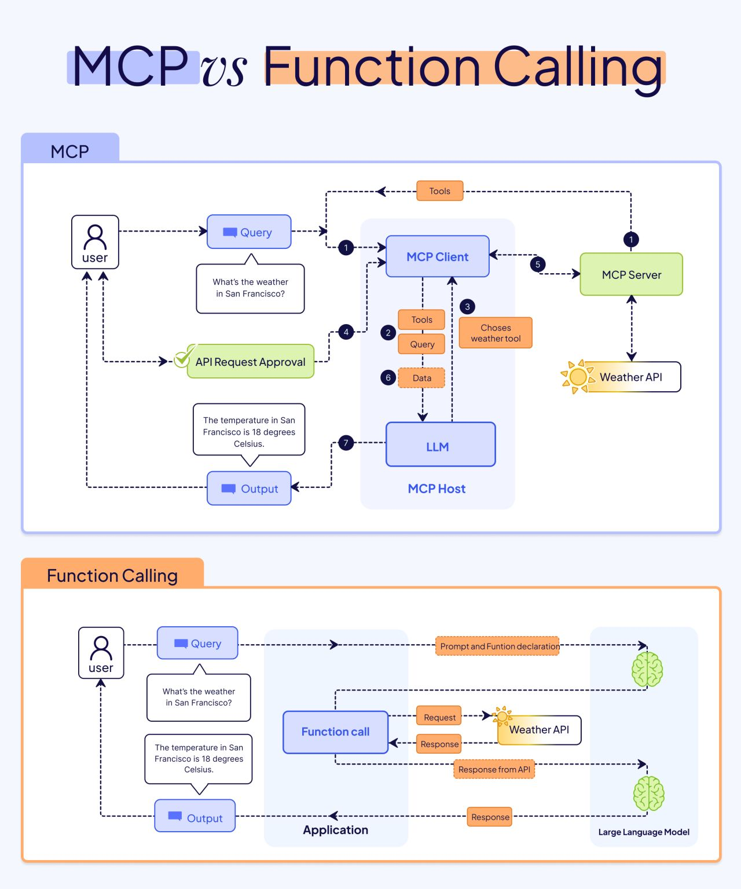

Connecting Agents to the World: MCP#
What is MCP?#
Model Context Protocol
A structured communication between AI models and external tools or systems.
A standardized way for AI agents to access tools and data
Think of it as:
Universal adapters for AI agents
Like USB ports for your computer - one standard way to connect many things
In simpler terms:#
MCP defines how an AI model can expose its internal context, memory, or reasoning to external agents.
It enables AI to act like an “agent” that can observe, store, and act based on structured context.
MCP is usually implemented via JSON-based messages describing:
Observations
Actions
Memory updates
Tool usage
The Problem MCP Solves#
Before MCP:
Each tool needs custom code → Hard to reuse or share
With MCP:
Standardized connections → Plug-and-play tools
MCP Servers Are Bridges#
MCP servers give LLMs access to:
Real-time data
Actions in external systems
MCP and AI Agents#
AI Agents are autonomous systems powered by language models.
MCP is the protocol the AI “speaks” to interact safely and systematically with its environment.
Provides a standardized way for AI agents to:
Share state
Keep track of memory
Decide actions
Communicate with tools or APIs
Without MCP, AI agents may act in unstructured ways, making it hard to track decisions or integrate with external systems.
How to use MCP#
Using MCP generally involves:
Defining the protocol (context structure for actions, observations, memory).
Communicating with the AI model using structured JSON.
Updating memory or state after each interaction.
How MCP message looks like#
Step 1: The “Thinking” Layer (Input)
This is what an AI model might generate internally in an orchestration framework like LangChain or AutoGPT. It describes why the AI is doing something.
{
"observations": "The user asked for weather in NYC.",
"actions": [
{"type": "fetch_weather", "parameters": {"city": "New York"}}
],
"memory_update": {
"last_weather_request": "NYC"
}
}
The AI model interprets this structure.
Takes an action (
fetch_weather) and updates memory.External code reads actions and executes them.
How MCP message looks like#
Step 2: The “Execution” Layer (Actual MCP Protocol)
This is the Official Tool Call that travels over the wire. It ignores the “thinking” and focuses solely on the instruction to the external server.
{
"jsonrpc": "2.0",
"method": "tools/call",
"params": {
"name": "fetch_weather",
"arguments": {
"city": "New York"
}
},
"id": "req_8472_nyc"
}
How MCP message looks like#
Step 3: The Standard Tool Result
{
"jsonrpc": "2.0",
"id": "req_8472_nyc",
"result": {
"content": [
{
"type": "text",
"text": "The current weather in New York is 45°F and Partly Cloudy."
}
],
"isError": false
}
}
How It Works#

MCP vs Function Calling#

MCP
- Standardizes how tools are discovered and served across any system
- Creates a universal language, don't have to rewrite connectors for every new model
- Enables a plug-and-play architecture where tools are decoupled from the LLM
- Allows to build a tool once and have it work everywhere
Function Calling
- Helps the LLM decide when an external tool is needed
- Defines the parameters and schema for a specific task
- Usually locked to a single application or specific model provider
Notes:
→ 𝘞𝘪𝘵𝘩𝘰𝘶𝘵 MCP, you are basically stuck manually wiring every new tool to every new model
→ 𝘞𝘪𝘵𝘩 MCP, you integrate the server once, and the LLM handles the rest via a standard protocol
→ You could say that Function calling is the request, where MCP is the interface
Expandable Toolkit#
Key Benefits:
Secure: Standardized authentication and permissions
Flexible: Add new tools without rewriting your agent
Community-driven: Open-source servers you can use and contribute to
Future-proof: As new systems emerge, new MCP servers connect them
Key Takeaways for MCP (2026)#
The “USB-C for AI” Standard
Build a tool once, and it works instantly across different platforms, like, Claude Desktop, VS Code, Cursor, and your own custom apps.
Decoupling Brain from Body
The model (the “Brain”) no longer needs to know how to call a weather API or where a database lives. It just asks the MCP Client to “Fetch Weather,” and the protocol handles the technical translation to the Server (the “Body”).
Dynamic “Self-Describing” Discovery
MCP servers are self-documenting, meaning that the AI can do without being programmed in advance.
Security via “Gated” Execution
MCP acts as a security firewall. Instead of giving an AI full access to your computer, you only expose specific Tools and Resources.
Transforming “Chat” into “Action”
Traditional AI just talks about data (Static Knowledge). MCP-enabled AI interacts with data (Live Action). It moves from “Tell me about my sales” to “Open the CRM, find the Q4 report, and summarize it in a new Slack message.”